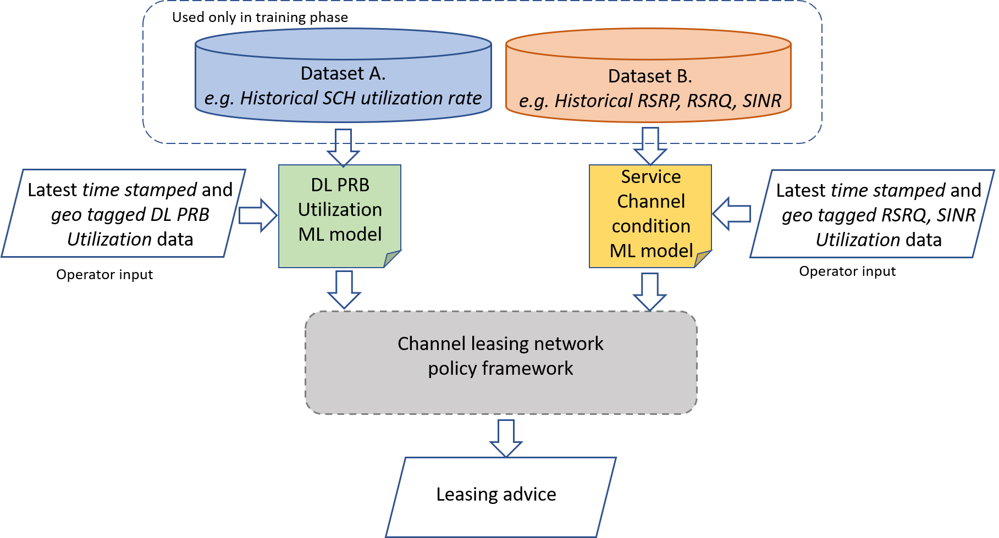
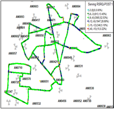
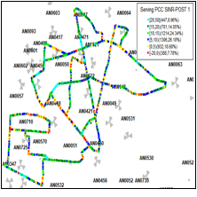

09/12/2020
MACHINE-LEARNING BASED FRAMEWORK FOR CELLULAR NETWORK (DOWNLINK) CHANNEL UTILIZATION PREDICTION FOR LEASING POLICY – DATA POINTS FOR CHANNEL LEASING SYSTEM
The focus is on monitoring the utilization statistics of data plane logical channel for each cell site to inform the decision of cross-leasing of channels for efficient use of channel resource by the lessor telco and to improve service quality for the lessee telco.
Logic channel utilization data would be gotten from network performance data. a typical structure of channel utilization performance data (collectively referred to as dataset A) should have the following fields
1. time stamps,
2. Cell ID/Name (Channel ID?) or location data,
3. Logic service channel (SCH) statistics. Specifically, down link (DL) physical resource block (PRB) utilization rate data.
The data would need to be collected for say about three-month time period. This could then be used to correlate or map PRB utilization level to location and time of day for each telco. It would also help in predicting the duration for which a service channel is likely to be under-utilized, such that the lease period would be set only within the bounds of this duration.
Furthermore, there is the need for periodic drive through (DT) data to inform policy for cross-leasing of service channels based on leasing criteria set or threshold for signal quality (RSRQ) and accepted interference level (SINR). The purpose of this is to ensure channel leasing is only done if the signal quality of the lessor telco is not degraded and that there is no increased signal interference as a result of the lease operation. The data needed include in this respect include
1. Time of day,
2. Cell ID /Name (Channel ID?) or location,
3. Signal power for each channel (RSRP),
4. Channel signal quality (RSRQ),
5. Interference data (SINR),
The above data (collectively called dataset B in this report) could be obtained by using networks performance software such as TEMS Discovery to generate the data for DT log file. Having obtained a historical data of the afore mentioned fields, this would then be feed to our machine learning (ML) prediction framework to predict the criteria parameters to anticipate and inform our network cross-leasing policy framework in deciding if channel leases operation should go ahead or not.
GENERAL STRUCTURE OF MACHINE LEARNING (ML) BASED CHANNEL LEASING FRAMEWORK
Here we show in Figure 1, a high-level design and structure of the ML based wireless channel leasing framework. It shows the expected input and output from the framework as well as hints at how the implementation system would be utilized.

Figure 1: Design of ML-based cellular wireless channel leasing system
PROGRESS SO FAR
We have begun development of the ML-framework. We based it on AutoML developed by H2O.ai. The AutoML framework allows us as to generates and rank several ML prediction models. This way we can use the most accurate model for subsequently predicting PRB utilization as well as service channel (SCH) states.
Furthermore, we obtained samples of historical DL PRB (or PDSCH) Utilization data. We are looking to get at least three months’ worth of this DL PRB historical data. Also, work is ongoing to extract timestamped and geo-tagged RSRQ and SINR data from geo spatial data as shown in Figure 2, which is obtained from Infovisita’s TEMS Discovery software.
 
Figure: Geospatial map of RSRQ and SINR from a region in Onitsha, Nigeria. Obtained in TEMS Discovery software.
On finding a way to extract this data from the map, we would apply same procedure to a weeks’ worth of RSRQ and SINR data to use for preliminary training and testing of the ML model.
In summary, we have developed ML- prediction model using H2O.ai’s Auto ML framework. To properly train the model, we are working towards obtaining at least three months’ worth of timestamped and geo tagged (or containing Cell name/ID) DL PRB utilization rate data. This the chase too for RSRQ and SINR data. After securing sufficient data, the model would then be trained, tested and we would operate a minimum viable version of the channel leasing framework, demonstrated.
PLAN FOR DATA ACQUISION
We plan to acquire data from NCC’s spectrum unit. In a case where NCC cannot support us with data, we intend to buy the data from Telcos through the consultants working with the Telcos in Nigeria.